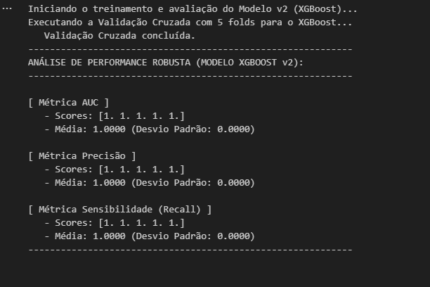
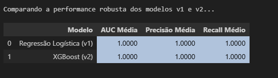
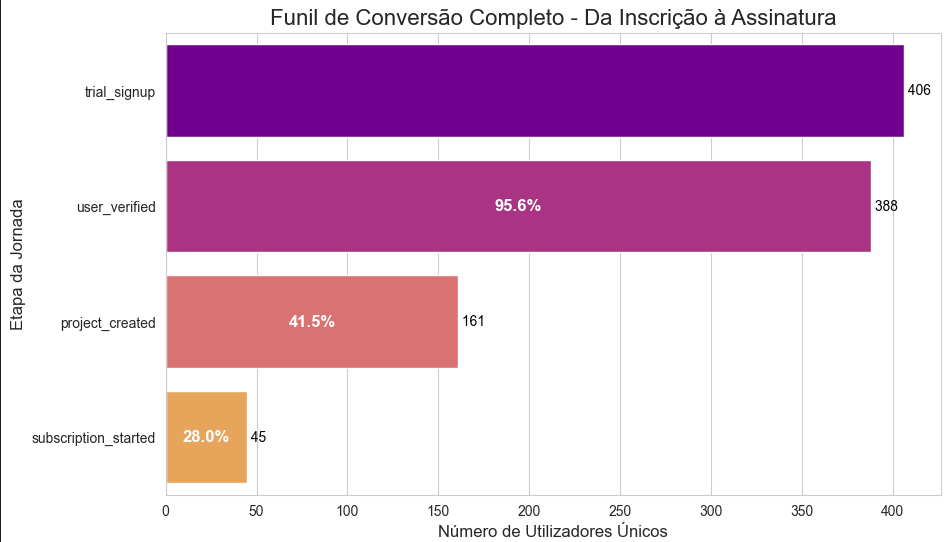
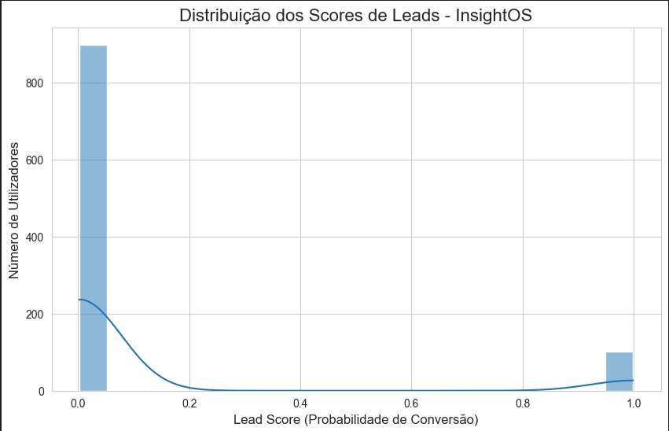
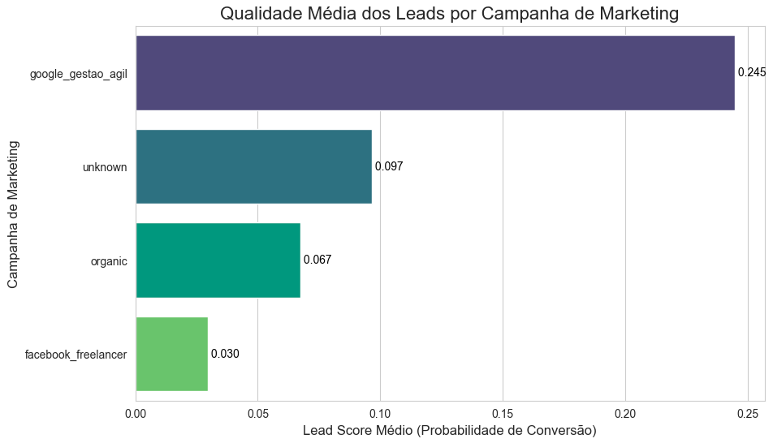

4. Modelagem de Lead Scoring
4.1 Estratégia
O objetivo era prever a variável-alvo target_converted (1 para convertido, 0 para não convertido). A estratégia de modelagem foi:
- Engenharia de Atributos: Transformar os logs de eventos brutos (
user_events) numafeature_tableestática, onde cada linha é um utilizador e cada coluna uma característica (ex: contagem deproject_created). - Tratamento de Desequilíbrio: A EDA revelou que apenas 10.1% dos utilizadores eram "convertidos". A técnica
class_weight='balanced'foi usada no modelo para dar mais importância à classe minoritária e evitar que o modelo a ignorasse. - Experimentação Comparativa: Treinar um modelo baseline simples e interpretável (Regressão Logística) e compará-lo com um modelo complexo e de alta performance (XGBoost) .
- Decisão Baseada em Parcimônia: Como ambos os modelos atingiram 100% de performance nos dados sintéticos, o Princípio da Parcimônia foi aplicado: a solução mais simples (Regressão Logística) foi escolhida por ser mais interpretável, eficiente e menos propensa a overfitting.
4.2 Detalhes Técnicos
O processo de modelagem foi encapsulado num Pipeline do Scikit-learn, garantindo que o pré-processamento fosse aplicado de forma consistente.
1. Pipeline de Pré-processamento:
Um ColumnTransformer foi usado para aplicar diferentes transformações a diferentes colunas:
* Colunas Numéricas (ex: events_project_created): Aplicado StandardScaler() para padronizar os dados (colocá-los na mesma escala).
* Colunas Categóricas (ex: campaign): Aplicado OneHotEncoder() para transformar texto em colunas numéricas (0/1). O parâmetro handle_unknown='ignore' foi usado para tornar o modelo robusto a novas campanhas que possam surgir no futuro.
2. Código do Pipeline (Estrutura): A estrutura final do pipeline, que combina pré-processamento e o modelo, é mostrada abaixo.
```python from sklearn.pipeline import Pipeline from sklearn.compose import ColumnTransformer from sklearn.preprocessing import StandardScaler, OneHotEncoder from sklearn.linear_model import LogisticRegression
Definir as colunas para cada transformador
numeric_features = ['events_project_created', 'events_subscription_started', ...] categorical_features = ['campaign', 'plan', ...]
Criar o pré-processador
preprocessor = ColumnTransformer( transformers=[ ('num', StandardScaler(), numeric_features), ('cat', OneHotEncoder(handle_unknown='ignore'), categorical_features) ])
Criar o pipeline final v1 (Regressão Logística)
lr_pipeline = Pipeline(steps=[ ('preprocessor', preprocessor), ('classifier', LogisticRegression(class_weight='balanced', random_state=42)) ])
Treinar o modelo
lr_pipeline.fit(X_train, y_train)
Salvar o pipeline inteiro para produção
import joblib joblib.dump(lr_pipeline, 'lead_scoring_pipeline_v1.joblib')
3. Métricas de Avaliação: A avaliação robusta (teste único e Validação Cruzada) confirmou a performance perfeita do pipeline nos dados simulados: * AUC: 1.0000 * Precisão: 1.0000 * Recall (Sensibilidade): 1.0000 * Desvio Padrão (Validação Cruzada): 0.0000, indicando estabilidade total.
Essa performance perfeita validou que o pipeline técnico era 100% funcional e capaz de "resolver" o problema "fácil" que os dados sintéticos apresentavam.
O log abaixo (do ficheiro modelo v2.png) mostra a performance robusta do Modelo v2 (XGBoost), que também alcançou a perfeição:

A tabela de comparação final abaixo (do ficheiro Celula 11...png) resume a 'batalha' dos modelos e prova que ambas as performances foram idênticas, validando a nossa decisão pelo "Princípio da Parcimônia" (escolher o Modelo v1, mais simples):

4.3 Análise Visual de Resultados e Insights
1. Funil de Conversão (Contexto EDA)
O gráfico de funil abaixo, gerado durante a Análise Exploratória de Dados (EDA), foi crucial para contextualizar o problema. Ele identificou o maior ponto de atrito na jornada do cliente:
* Ponto Crítico: A maior quebra ocorre entre as etapas user_verified e project_created, onde menos da metade (41.5%) dos utilizadores engajados avança.
* Implicação: Esta etapa (project_created) é um dos preditores mais fortes para o modelo de scoring.

2. Distribuição dos Scores do Modelo Este gráfico mostra o resultado final do nosso modelo (Regressão Logística v1) aplicado a todos os 1.000 utilizadores. * Descoberta: O resultado é uma distribuição marcadamente bimodal, indicando que o modelo é extremamente decisivo. * Grupo Frio (Score ≈ 0.0): A grande maioria dos leads (cerca de 90%) foi classificada com confiança como "fria". * Grupo Quente (Score ≈ 1.0): Um segundo grupo claro (os restantes 10%) foi classificado com confiança como "quente". * Implicação: A ausência de scores intermédios (ex: 0.4, 0.5) é uma vitória para o negócio, pois elimina a ambiguidade e permite à equipa de vendas focar-se apenas no grupo "quente".

3. Insight de Negócio: Qualidade Média por Campanha
Finalmente, este gráfico conecta o resultado do modelo (o lead_score) de volta ao problema de negócio (investimento de marketing).
* Descoberta: A campanha google_gestao_agil (score médio de 0.245) atrai leads de qualidade esmagadoramente superior a todas as outras fontes
* Implicação de ROI: Esta é a principal recomendação para a equipa de Marketing. O gráfico prova que o orçamento deve ser realocado para esta campanha, pois ela gera os leads com maior probabilidade de conversão, otimizando o ROI .
